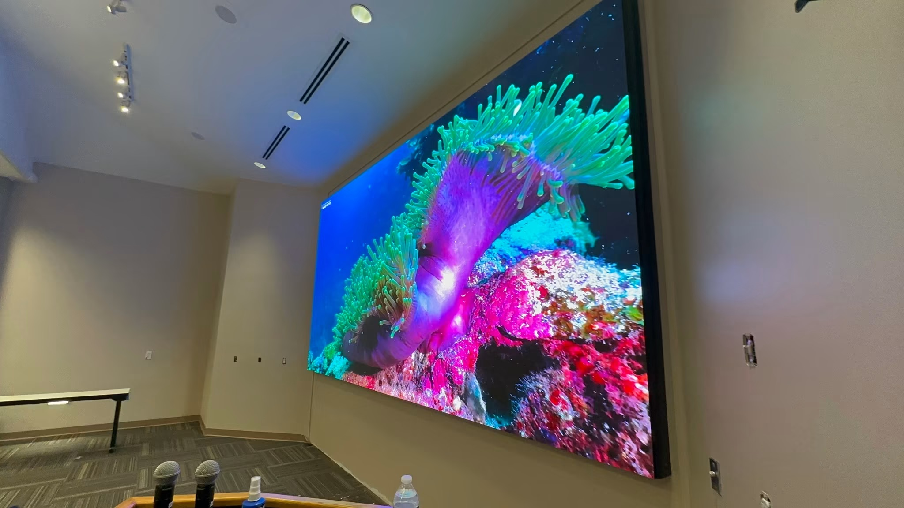
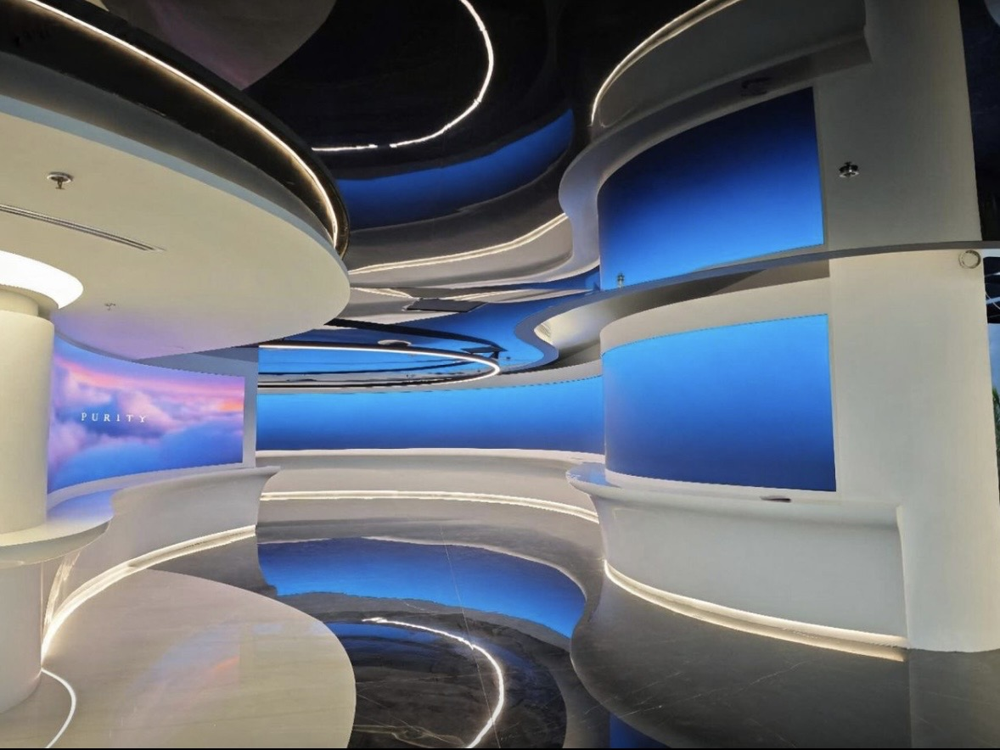

By David
What is a Saudi public procurement LED display tender? A Saudi public procurement LED display tender is a procurement run by a government entity through the national electronic procurement platform, evaluated against published criteria, with conformity and capability requirements. This 2026 guide explains what bidders must prepare.
Public procurement in Saudi Arabia is increasingly centralised through a national electronic platform that publishes tenders, receives bids, and records the evaluation. A government LED display tender is evaluated against published criteria, and the documentation requirements are enforced strictly.
The process rewards preparation. Registration, capability evidence, and bid security all take time, and a bidder who starts when the tender appears is usually behind those who prepared earlier. Understanding the sequence before a tender is published is the first step.
Saudi public tenders are published on the national electronic procurement platform, which also handles bid submission and clarification. Bidders must register on the platform and maintain a current commercial registration, because an incomplete or lapsed profile prevents submission.
| Stage | What Happens | Bidder Duty |
|---|---|---|
| Registration | Company registers on the platform | Complete before bidding |
| Tender publication | Notice published on the platform | Review the documents fully |
| Clarification | Bidders ask questions | Submit within the stated period |
| Bid submission | Bid filed with security | Complete and correctly signed |
| Evaluation | Scored against criteria | Ensure claims are evidenced |
| Award and contract | Award published and signed | Arrange bond on award |
Read the tender documents completely before deciding to bid. A requirement that is easy to miss in a long document can disqualify a bid, and the cost of preparing a submission is wasted if a formal condition was not met.
The product must meet Saudi standards and be registered on the SABER platform, and the tender will normally require the conformity documentation for the exact model offered. The product certificate is model-specific, so it must match the offered screen.
| Document | Purpose | Common Failure |
|---|---|---|
| SABER product certificate | Model-level conformity | Certificate for a different model |
| Safety test report | Electrical safety | Report out of date |
| EMC test report | Electromagnetic compliance | Not held for the offered model |
| Arabic labelling | Market information | English-only documentation |
| Reference projects | Past performance | References not contactable |
| Service commitment | After-sales capability | No local presence |
Prepare the technical file before the tender appears. A supplier who can produce test reports and references immediately is in a stronger position than one who must obtain them during the bidding window. Keep a bid library so each tender can be answered without starting from scratch.
A Saudi public procurement LED display tender normally requires bid security with the submission and a performance bond on award, usually a percentage of the contract value. Arrange the security through a bank early, because issuing it takes time and a late security disqualifies the bid.
Price the security cost and the documentation effort into the offer. A performance bond for a large screen supply carries a real cost, and a bidder who forgets it discovers the margin has gone after the award rather than before it.
Evaluation scores the bids against the published criteria, and the weighting is stated in the tender. Typical factors include technical compliance, price, experience, and capability. A bid that scores well overall can still fail if it misses a mandatory requirement.
| Criterion | What It Measures | Typical Weight |
|---|---|---|
| Technical compliance | Meets every stated requirement | 25 to 35 percent |
| Price | Cost against the requirement | 25 to 35 percent |
| Experience | Similar projects delivered | 10 to 20 percent |
| Local capability | Resources and local support | 10 to 20 percent |
| Service and spares | Support across the screen life | 10 to 15 percent |
| Delivery programme | Ability to meet the date | 5 to 10 percent |
Where local capability and service carry weight, describe the specific commitment rather than a general intention. A named service partner, a stated response time, or a service facility in the country is verifiable, while a general statement is not.
Public projects specify delivery, installation, commissioning, training, and warranty obligations, and the acceptance test may be defined by the entity rather than agreed later. Plan the delivery programme to include these obligations and add a buffer for customs clearance.
Tie the acceptance test to the payment milestones. A supplier who is paid only after the screen passes the specified test has an incentive to prepare properly, and the entity has a clear standard for accepting the work.
Most of these are administrative failures rather than technical ones, which is what makes them frustrating. A supplier with a good product can lose a Saudi public procurement LED display tender on a missing document or a lapsed registration, so the paperwork deserves the same attention as the specification, as discussed in the tender evaluation guide and the vendor scorecard guide.
Public buyers should engage the market before publishing a notice. Early conversations tell the buyer what is achievable at the budget and help avoid a specification that no supplier can meet. The engagement must be open and documented so no bidder gains an unfair advantage.
Use the engagement to test the specification, not to select a supplier. Ask suppliers what they would need to know to bid well, then publish that information to everyone in the tender documents.
Public projects often require after-sales capability within the country, because a screen installed in a government building must be supported locally. A bidder without a local service presence needs a partner who can attend site, hold spares, and respond within the stated time.
Describe the service arrangement in specific terms. A named partner, a stated response time, and a spare parts plan are verifiable, while a general commitment to support the customer is not.
Debrief after every tender, won or lost, and keep a bid library of the documents that change rarely, because a supplier who treats a Saudi public procurement LED display tender as a learning opportunity compounds its advantage.
A supplier who has completed several Saudi public projects understands the platform, the security requirements, and the local service expectations, and that experience often outweighs a lower price in the evaluation.
Keeping the award documentation with the contract protects the entity if an unsuccessful bidder challenges the outcome and gives the next procurement a template that reflects what the market can deliver.
The strongest bids come from suppliers who treat each tender as an opportunity to sharpen the evidence file rather than as an isolated transaction with no lasting value.

For this requirement our range covers it directly: the X Series (front/rear service, common parts across platforms) and the series overview for spare-part lists.
Send us the tender requirements, and we will supply the SABER and technical evidence your bid needs.
Request Tender PackChat on WhatsApp